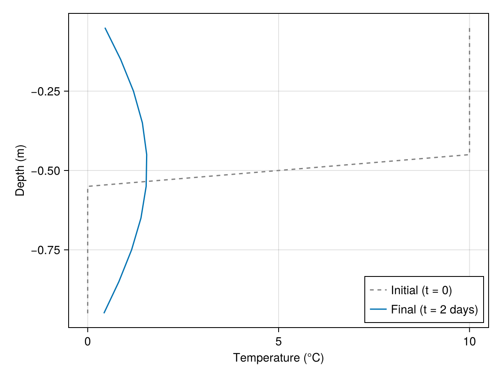

Implementing a process: 1D linear heat diffusion
In this example, we walk through implementing a new process in Terrarium following the workflow described on the Implementing processes page. We use a simple 1D linear heat diffusion process as the concrete working example. The governing equation is:
\[c\frac{\partial T(z, t)}{\partial t} = \frac{\partial}{\partial z}\left[\kappa\frac{\partial T(z, t)}{\partial z}\right]\]
where $T$ is temperature (°C), $\kappa$ is the bulk thermal conductivity (W m⁻¹ K⁻¹), and $c$ is the volumetric heat capacity (J K⁻¹ m⁻³). The ratio $\alpha = \kappa/c$ is typically referred to as the thermal diffusivity (m² s⁻¹).
This process involves a spatial derivative along the vertical axis, so it requires the full three-level implementation stack: process methods → kernel functions → interface methods. Note that Terrarium already provides a more comprehensive implementation of two-phase energy transport in soils; this implementation is meant only to serve as an example.
using Terrarium
using KernelAbstractions: @kernel, @index
using Oceananigans.Operators: ∂zᵃᵃᶜ, ∂zᵃᵃᶠ
using Oceananigans.Utils: launch!Defining the process types
A concrete process type is a Julia struct parameterized by the numeric float type NF. We first define an abstract subtype of AbstractProcess for all heat conduction variants. This is optional for a single implementation but is generally encouraged: it allows future alternative implementations (e.g. with depth-varying conductivity) to dispatch through the same kernel entry points without any changes to model code.
abstract type AbstractHeatConduction{NF} <: Terrarium.AbstractProcess{NF} end
@kwdef struct LinearHeatConduction{NF} <: AbstractHeatConduction{NF}
"Bulk thermal conductivity [W m⁻¹ K⁻¹]"
κ::NF = 2.0
"Volumetric heat capacity [J K⁻¹ m⁻³]"
c::NF = 2.0e6
end
LinearHeatConduction(::Type{NF}; kwargs...) where {NF} = LinearHeatConduction{NF}(; kwargs...)Main.var"##353".LinearHeatConductionType parameters κ and c are stored as fields of type NF, so they automatically adopt the precision of the model. The convenience constructor LinearHeatConduction(Float32) lets the caller specify the float type explicitly.
Declaring variables
The variables method should return a tuple of declarations for all spatially-varying state required by this process. Temperature is a 3D column variable (XYZ) since it varies with depth.
Terrarium.variables(::LinearHeatConduction) = (
Terrarium.prognostic(:temperature, Terrarium.XYZ(); units = u"°C"),
)prognostic means the timestepper integrates this variable based on its tendency at each time step. A matching tendency field (state.tendencies.temperature) is allocated automatically. No auxiliary or input variables are needed for this simple process.
Primitive methods
Primitive methods are pure scalar functions accepting and returning scalar values completely independently of the spatial grid. They should generally be used to implement elementary physical equations such as Fourier's law in the case of heat conduction. Primitive methods should always be marked with @inline so the compiler can inline them directly into the calling kernel function.
@inline function compute_diffusive_flux(proc::LinearHeatConduction{NF}, ∂T∂z::NF) where {NF}
q = -proc.κ * ∂T∂z
return q
endcompute_diffusive_flux (generic function with 1 method)This function can be tested directly in the REPL without constructing a grid or model, which is the main benefit of keeping physics at this level separate from indexing:
proc = LinearHeatConduction(Float64)
compute_diffusive_flux(proc, 10.0) # => -20.0 W/m²-20.0Kernel functions
Kernel functions add the grid indexing layer. They carry explicit (i, j, k, grid, fields, ...) index arguments, read scalar values from Fields, call process methods, and write results into output fields.
Two kernel functions are needed:
- a flux function evaluated at vertical cell faces (passed as a higher-order argument to
∂zᵃᵃᶜ) - a tendency function that evaluates the flux divergence at cell centers
As mentioned in the documentation on Fields, operators can be applied to a Field to construct expression trees. One of these operators defined in Oceananigans is the spatial derivative. For this example, we're only interested in the derivative along the vertical axis z. As the spatial discretisation is done with the finite-volume method, the fluxes are evaluated at the cell faces. Using Oceananigans' operators, this spatial derivative at the cell faces is written as ∂zᵃᵃᶠ, where the superscript aaf indicates that the operator is location-agnostic (a) in the x and y directions and evaluates at the cell faces (f) in the z direction. The divergence of the flux is for the one dimensional case equal to the spatial derivative of the flux at the cell centers, which is written as ∂zᵃᵃᶜ. For more background info on these operators, see the Spatial operators documentation of Oceananigans.
When passed as a higher-order argument to ∂zᵃᵃᶜ, the flux function receives the underlying Oceananigans field grid as its grid argument (not the Terrarium grid wrapper).
Base.@propagate_inbounds function diffusive_heat_flux(
i, j, k, grid, fields,
proc::LinearHeatConduction,
args...
)
∂T∂z = ∂zᵃᵃᶠ(i, j, k, grid, fields.temperature)
return compute_diffusive_flux(proc, ∂T∂z)
end
Base.@propagate_inbounds function compute_diffusion_tendency!(
tendencies, i, j, k, grid, fields,
proc::LinearHeatConduction,
args...
)
# Oceananigans operators require the underlying Oceananigans field grid, not the Terrarium wrapper
field_grid = get_field_grid(grid)
# ∂T/∂t = -(1/c) * ∂q/∂z, where q = -κ * ∂T/∂z
tendencies.temperature[i, j, k] += -∂zᵃᵃᶜ(i, j, k, field_grid, diffusive_heat_flux, fields, proc) / proc.c
return tendencies
endcompute_diffusion_tendency! (generic function with 1 method)Tendencies use += rather than = because multiple processes may each contribute to the same prognostic variable within a single time step.
Kernels (annotated with @kernel) extract loop indices from the parallel execution context and call the mutating kernel function. Keep them as thin as possible; all physics and dispatch logic should be defined in the compute_* kernel functions.
Even for surface (XY) fields, write output as out.name[i, j, 1] (with k = 1). 2D indexing (out.name[i, j]), especially in setindex!, will result in errors when compiling the kernel on GPU.
@kernel inbounds = true function compute_tendencies_kernel!(
tendencies, grid, fields, proc::AbstractHeatConduction, args...
)
i, j, k = @index(Global, NTuple)
compute_diffusion_tendency!(tendencies, i, j, k, grid, fields, proc, args...)
endcompute_tendencies_kernel! (generic function with 4 methods)Dispatching on AbstractHeatConduction rather than LinearHeatConduction means any future subtype that overrides compute_diffusion_tendency! is automatically routed here.
Interface methods
Interface methods are the top-level API consumed by the timestepper. They are the only layer that sees the full state — the full state is never passed to a kernel. Their job is to extract the minimal field sets and launch the kernel.
Terrarium.compute_auxiliary!(state, grid, proc::LinearHeatConduction, args...) = nothing
function Terrarium.compute_tendencies!(state, grid, proc::LinearHeatConduction, args...)
out = Terrarium.tendency_fields(state, proc)
fields = get_fields(state, proc)
launch!(grid, Terrarium.XYZ, compute_tendencies_kernel!, out, fields, proc)
return nothing
endTerrarium.tendency_fields extracts the tendency NamedTuple for this process from state. get_fields assembles a compact NamedTuple of all fields declared by the process.
LinearHeatConduction has no auxiliary variables, so compute_auxiliary! is simply a no-op. Note that both methods must always be defined, even if one does nothing; this makes missing implementations fail loudly rather than silently default to no-ops.
Defining a model
To run a simulation, the process must be embedded in an AbstractModel. We define a minimal wrapper following the same convention as other Terrarium models: positional grid, timestepper, and any process and initializer keyword arguments with sensible defaults.
@kwdef struct HeatModel{
NF,
Grid <: Terrarium.AbstractLandGrid{NF},
Cond <: AbstractHeatConduction{NF},
Init <: Terrarium.AbstractInitializer{NF},
TS <: Terrarium.AbstractTimeStepper,
} <: Terrarium.AbstractModel{NF, Grid}
grid::Grid
conduction::Cond = LinearHeatConduction(eltype(grid))
initializer::Init = DefaultInitializer(eltype(grid))
timestepper::TS = ForwardEuler(eltype(grid))
endForward the AbstractModel methods to the process:
function Terrarium.compute_auxiliary!(state, model::HeatModel)
Terrarium.compute_auxiliary!(state, model.grid, model.conduction)
return nothing
end
function Terrarium.compute_tendencies!(state, model::HeatModel)
Terrarium.compute_tendencies!(state, model.grid, model.conduction)
return nothing
endThe variables and initialize! methods are inherited automatically from AbstractModel: variables(model) collects variables from all AbstractProcess fields of the struct, and initialize! defaults to the associated initializer.
Running a simulation
Set up a 1D column grid with 10 layers of 0.1 m each (total depth 1 m) and construct the model with default process parameters:
grid = ColumnGrid(CPU(), Float64, UniformSpacing(Δz = 0.1, N = 10))
model = HeatModel(grid)HeatModel{Float64} on CPU()
├── grid: ColumnGrid with dimensions (1, 1, 10)
├── conduction: Main.var"##353".LinearHeatConduction{Float64}
├── initializer: DefaultInitializer{Float64}
├── timestepper: ForwardEuler{Float64}
We will initialize the model with a piecewise constant temperature profile: 10°C in the upper half (z > −0.5 m), 0°C in the lower half. By convention, z = 0 corresponds to the surface with z (elevation) decreasing with depth.
initializers = (
temperature = (x, z) -> ifelse(z < -0.5, 0, 10),
)
integrator = initialize(model; initializers)
T_init = copy(vec(interior(integrator.state.temperature)))10-element Vector{Float64}:
0.0
0.0
0.0
0.0
0.0
10.0
10.0
10.0
10.0
10.0Run for 2 days to let the step front diffuse:
using Oceananigans.Units: days
sim = Simulation(integrator; stop_time = 2days, Δt = 600.0)
run!(sim)[ Info: Initializing simulation...
[ Info: ... simulation initialization complete (73.966 ms)
[ Info: Executing initial time step...
[ Info: ... initial time step complete (397.311 ms).
[ Info: Simulation is stopping after running for 472.890 ms.
[ Info: Simulation time 2 days equals or exceeds stop time 2 days.
Extract the temperature profile and compare with the initial condition:
using CairoMakie
import DisplayAs
z = znodes(get_field_grid(grid), Center())
T_final = vec(interior(integrator.state.temperature))
let fig = Figure(),
ax = Axis(fig[1, 1], xlabel = "Temperature (°C)", ylabel = "Depth (m)")
lines!(ax, T_init, z; color = :gray, linestyle = :dash, label = "Initial (t = 0)")
lines!(ax, T_final, z; label = "Final (t = 2 days)")
axislegend(ax, position = :rb)
DisplayAs.PNG(fig)
end
Julia version and environment information
This example was executed with the following version of Julia:
using InteractiveUtils: versioninfo
versioninfo()Julia Version 1.12.7
Commit 6d172b025e4 (2026-08-15 08:05 UTC)
Build Info:
Official https://julialang.org release
Platform Info:
OS: Linux (x86_64-linux-gnu)
CPU: 4 × AMD EPYC 7763 64-Core Processor
WORD_SIZE: 64
LLVM: libLLVM-18.1.7 (ORCJIT, znver3)
GC: Built with stock GC
Threads: 1 default, 1 interactive, 1 GC (on 4 virtual cores)
Environment:
JULIA_DEBUG = Documenter
These were the top-level packages installed in the environment:
import Pkg
Pkg.status()Status `~/work/Terrarium.jl/Terrarium.jl/docs/Project.toml`
[c7e460c6] ArgParse v1.2.0
[052768ef] CUDA v6.3.1
[13f3f980] CairoMakie v0.15.13
[0b91fe84] DisplayAs v0.1.6
[e30172f5] Documenter v1.19.0
[daee34ce] DocumenterCitations v1.5.0
[d12716ef] DocumenterInterLinks v1.1.0
[db073c08] GeoMakie v0.7.17
[033835bb] JLD2 v0.6.6
[0f8b85d8] JSON3 v1.14.3
[63c18a36] KernelAbstractions v0.9.42
[98b081ad] Literate v2.21.0
[85f8d34a] NCDatasets v0.14.15
[904d977b] NumericalEarth v0.7.0
[9e8cae18] Oceananigans v0.111.0
[a3a2b9e3] Rasters v0.15.0
[d1845624] RingGrids v0.1.9
[80418d68] Terrarium v0.1.7 `~/work/Terrarium.jl/Terrarium.jl`
[b77e0a4c] InteractiveUtils v1.11.0
[d6f4376e] Markdown v1.11.0
This page was generated using Literate.jl.